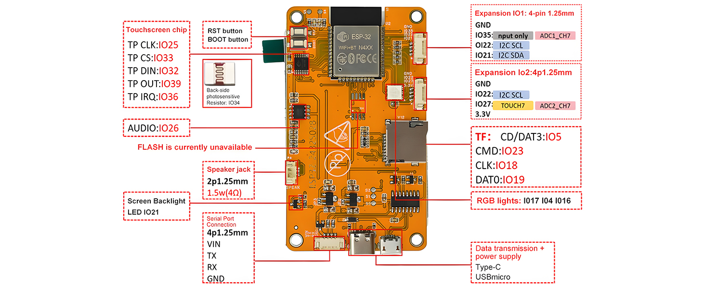

| Bauteil | Anschlüsse |
|---|---|
| HW-458B (ESP-WROOM-32 + ST7789P3-TFT + resistiver Touch, integriertes Board) | TFT und Touch sind fest auf derselben Platine verdrahtet - keine externe Verkabelung nötig, siehe Abschnitte unten |
| DHT11, 3-Pin (VCC/GND/DATA) | einziges tatsächlich extern verkabeltes Bauteil - über den 4-poligen Erweiterungsanschluss „IO2" |
| RGB-Status-LED (onboard) | 3 Farbkanäle + gemeinsame Kathode, laut Datenblatt fest verdrahtet |
| ESP32-Pin | Verbindet mit | Funktion |
|---|---|---|
IO13 | TFT MOSI | SPI-Datenleitung zum Display (onboard) |
IO12 | TFT MISO | SPI-Rückkanal (onboard, meist ungenutzt) |
IO14 | TFT SCLK | SPI-Takt (onboard) |
IO15 | TFT CS | Chip-Select TFT (onboard) |
IO2 | TFT DC | Data/Command-Umschaltung (onboard) |
IO21 | TFT BL (Backlight) | Hintergrundbeleuchtung, PWM (LEDC) für Helligkeitsregelung |
IO25 | Touch CLK | Touch-SPI-Takt, eigener Bus (onboard) |
IO33 | Touch CS | Chip-Select Touch-Controller (onboard) |
IO32 | Touch DIN (Touch-MOSI) | Touch-SPI-Datenleitung zum Controller (onboard) |
IO39 | Touch OUT (Touch-MISO) | Touch-SPI-Rückkanal (onboard, Input-only-Pin) |
IO36 | Touch IRQ | Touch-Interrupt (onboard, Input-only-Pin) |
IO22 | DHT11 DATA | 1-Wire-Digitalsignal, einzige externe Verkabelung über Erweiterungsanschluss „IO2" |
IO17 | LED R | Rotkanal RGB-Status-LED (onboard) |
IO4 | LED G | Grünkanal RGB-Status-LED (onboard) |
IO16 | LED B | Blaukanal RGB-Status-LED (onboard) |
TFT RST liegt auf -1 (an EN gebunden, kein eigener GPIO). TFT-SPI-Pins (MOSI/MISO/SCLK/CS/DC/BL) stehen nicht im offiziellen Produktbild (siehe unten), sondern nur über das baugleiche Referenzdesign LCDWIKI E32R28T/E32N28T bestätigt - alle übrigen Pins in dieser Tabelle (Touch, RGB-LED, Audio, Lichtsensor, SD-Slot) sind über das Produktbild docs/hw-458b-pinout-datenblatt.jpg direkt vom Verkäufer bestätigt.
Interaktiv: Klick auf einen Draht hebt ihn hervor und zeigt Start-/Zielpin unten an. Klick auf die freie Fläche hebt die Auswahl wieder auf. Nur der DHT11 wird tatsächlich verkabelt - TFT/Touch/RGB-LED sind onboard und erscheinen deshalb nicht als Drähte (siehe Tabelle oben für deren Pinbelegung).
Einziges tatsächlich per Hand zu verkabelndes Bauteil. Der
Erweiterungsanschluss „IO2" stellt 4 Pins bereit: GND,
IO22, IO27, 3.3V - genutzt werden
davon nur GND, IO22 (DATA) und 3.3V;
IO27 liegt am Anschluss an, ist aber aktuell ungenutzt.
GPIO2 selbst (wörtlich in älteren Lastenheft-Fassungen genannt) ist die
TFT-DC-Leitung und daher belegt - IO22 ist der tatsächlich
korrekte DATA-Pin.

docs/hw-458b-pinout-datenblatt.jpg) - bestätigt Touch-, RGB-LED-, Audio-, Lichtsensor- und SD-Pins sowie den Erweiterungsanschluss „IO2" (GND/IO22/IO27/3.3V) direkt. Die TFT-SPI-Pins (MOSI/MISO/SCLK/CS/DC) sind hier nicht abgebildet - dafür gilt weiterhin nur die Bestätigung über das Referenzdesign LCDWIKI E32R28T/E32N28T.LedManager nimmt HIGH=an (gemeinsame Kathode)
an. Falls am eigenen Board falsch, ist nur die Polarität in
LedManager::setColor zu invertieren.
Laut Datenblatt auf dem Board vorhanden, aktuell von der Firmware nicht
genutzt: IO26 (Audio), IO34
(Lichtsensor, ohnehin nur Input-only), IO5 (SD-Card-Detect),
IO23 (SD CMD), IO18 (SD CLK), IO19
(SD DAT0). Details siehe docs/entscheidungen.md und
firmware/include/pins.h.